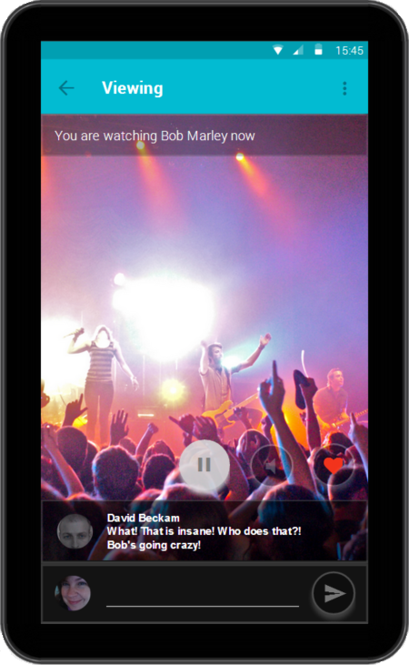

WorldScope
by Team Litmus
Leong Wei Ming / Low Sharmine / Nguyen Duc Thien / Soh You Jun
Presentation Flow
- Motivation
- Key Requirements
- Features
- Design Decisions
- Project Planning
- Prototypes
- Software Engineering Practices
- Plans
- Question and Answers
Motivation
Boring!
Meerkat and Periscope
So Why WorldScope?
Open Source
Unify Streaming Materials
Product Study: Periscope

Product Study: Meerkat
Learning points & Basics
| Intuitive UI | Minimalist UI |
| Convenience of Social Media Login | Facebook Integration |
| Easy to find & follow users | Subscriptions, Popular, Latest |
| Viewing without Application | Web Browser View |
| Privacy | Private streams |
Live Comments
Stickers
Administrative Panel

Summary of Key Features
- Live Comments
- Stickers
- Subscription System
- Administrative Panel
Authorisation
- Accessing database
- View private stream
- Log in to administration panel
Encryption
- Packet replay / sniffing
- Access tokens
- Brute forcing
Social Media
- Bot accounts
Monitoring
- Denial-of-service

Nginx
- Reverse proxy
- Performance
- Concurrency
Node.js (JavaScript)
- Many concurrent connections
- Prior experience
- Many users and companies
hapi
- Stable & Reliable
- Lightweight
- Well documented
MySQL
- Relational data
- Scalable
- Well documented
Wowza
- Performance
- Support

Android
- Java Programming language
- Prior experience
- Market share

Mithril
- Functionality
- Performance
- Ease of Use

Facebook API
- Popular
- Twitter integrated with Periscope

Socket Adapter

- Receiving point of websocket messages
- Authenticate and validate messages
- Inject API request to main server pipeline
- Broadcast messages to chat rooms
Other Adapters
- Social Media Adapter: Requests to Facebook
- Media Server Adapter: Requests to Media Server
Controllers and Services
- Controllers: Routing destination for API requests
- Designed based on API paths
- Services: Encapsulate business logic
- Expose all features through a single service component
- Internal components are based on problem domain objects

Storage and Models
- Models: Abstraction of database access through ORM
- Designed based on unit resources
- Basis for REST API design
- Storage: Initialize and expose component's APIs


Client issues a POST request to /api/streams

- Check if permissions include user's scope
- Validate parameters for new stream

- Request is routed to corresponding controller
- Process request and call appropriate services

Request Media Server for new stream
Call Storage to record stream's info
Call Socket Adapter to open new chat room
- Call Chat Room to initialize new room
- Interceptor format response and sent to user

Project Planning
Sharmine
Plus points
- Good with Networks
- Interested in System Administration
Main Responsibility
- Implementation of Media Server for WorldScope
Thien
Plus points
- Experienced in Software Engineering
- Extensive knowledge of various developmental tools
Main Responsibility
- Project manager for Litmus for the initial sprints
- Implementation of application server for WorldScope
You Jun
Plus points
- Prior experience with content management systems on an Enterprise level
- Extensive knowledge of various developmental tools
Main Responsibility
- Implementation of Administrative Panel for WorldScope
Wei Ming
Plus points
- Focused on User Interface design and interaction
Main Responsibility
- Implementation of mobile client for WorldScope
Priorities
Streaming and viewing prototype

Application server and administrator panel
Mobile Client Prototype
Mobile Client UI Evaluation
Neilsen's Heuristics
Match between System and Real world
"Does 'My friends' and 'Subscribers' mean the same thing?"
User control and Freedom
"Does the 'back' button and 'stop' button refer to the same action?"
Recognition rather than Recall
"The application does not allow users to undo their actions easily such as when a user accidentally stopped watching a stream."

Plans
- Login
- Metrics
- Streams
- Users
- Settings


Software Engineering
- Unit Testing
- Continuous Integration
- Peer Review
Unit Testing (lab & Coveralls)
Coverage: 93.57% (51/793)
app/Router.js missing coverage on line(s): 40, 41, 61, 62, 68, 69, 70
app/controllers/UserController.js missing coverage on line(s): 55, 59, 62, 64
...
Continuous Integration (Travis)
Peer Review (GitHub)
| Week 1 ~ 4 |
|
| Week 5 ~ 8 |
|
| Week 9 ~ 13 |
|
THE END
Questions
and
Answers
Backup Slides
"What separates you from the 2 products?"
- Admin Panel
- Private Streaming
- Open Source
"What kind of protocols are you using?"
- RTMP to push from Client to Server
- MPEG-DASH from Server to Clients
"How are you going to regulate the content"
As of now, this will have to be done manually, having administrators to block streams when the need arises. We will try to have a good report/alarm and search function
"Isn't Wowza a paid software?"
- Developer license for 180 days of free usage
- Wowza recommended for stability
- Media Server is replacable with your choice